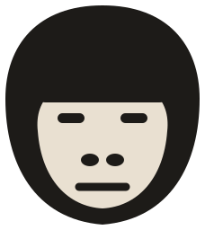
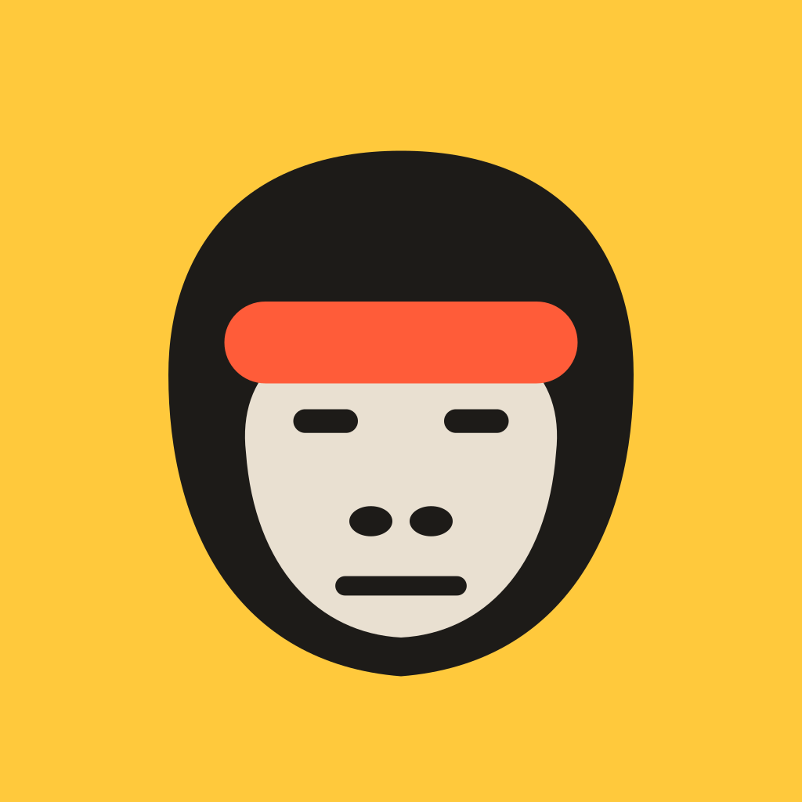

logo-mark.svg · paper / white / sun

logo-mark-mono.svg · on coral, 1-color print

app-icon.svg · on ink and photos
mat monkeys
.
lockup · mark height = 1.7× cap height
mat monkeys
.
reversed lockup · use the icon tile